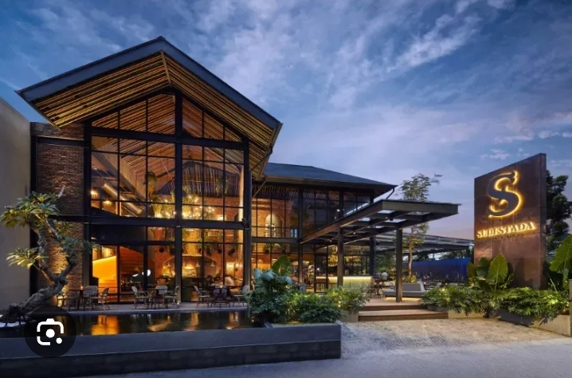

NPSN: 20210089
Fasilitas:Resto Bogor meliputi ruang makan ber-AC dan lesehan yang nyaman, WiFi gratis, live music, area parkir luas, mushola bersih, serta dapur yang higienis dengan pelayanan cepat dan ramah.
visi:Menjadi destinasi kuliner favorit di Kota Bogor yang mengedepankan kualitas rasa, inovasi menu, dan kepuasan pelanggan.
misi:1. Menghadirkan beragam menu Nusantara dan modern dengan cita rasa autentik.
2. Menjaga kualitas pelayanan dengan mengutamakan keramahan dan kecepatan.
3. Menjaga kebersihan, kenyamanan, dan keamanan restoran.4. Memberikan harga yang terjangkau dengan kualitas terbaik.